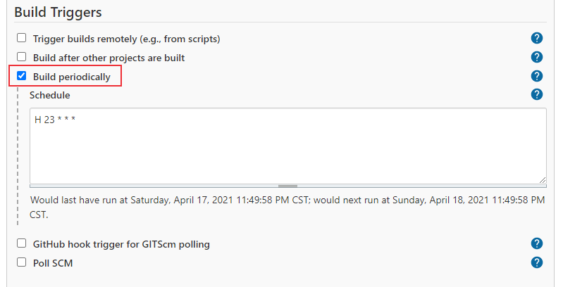
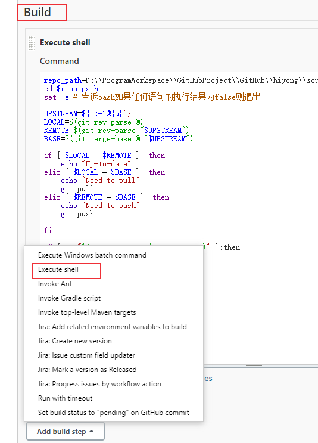
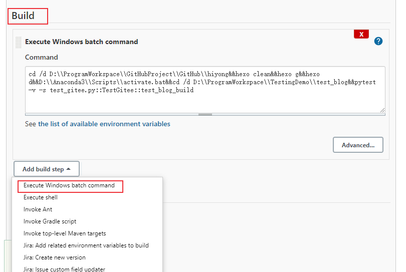
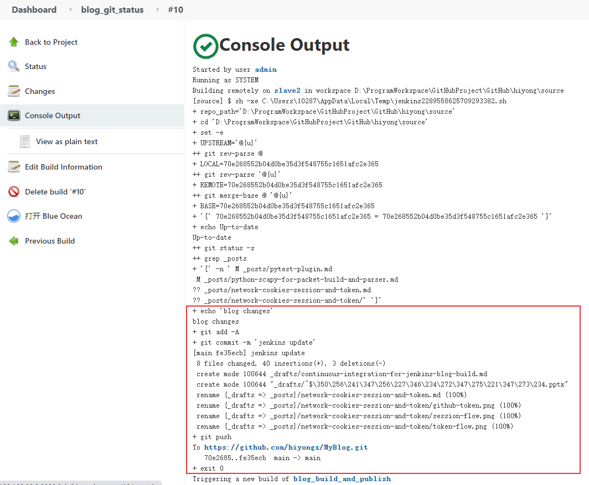

本文介绍使用jenkins来进行自动发送博客，检测博客项目是否有文件增加或者修改，如果有改动就执行本地构建和发布。
PS：写这篇文章时还不了解Github Actions服务，刚好用过Jenkins，所以使用Jenkins来实现博客自动发布。如果你只想实现Hexo博客push后触发自动编译发布到GitHub Pages或者Gitee Pages，可以使用Github Actions服务，实现起来更加简洁方便，具体实现可参考使用GitHub Actions实现Hexo博客自动发布。
前言
去年使用hexo搭建了一个个人博客，使用Gitee Pages服务部署。发布博客的步骤一般是这样的：先编辑好文章，放到特定的博客项目目录下，然后本地生成博客静态文件，本地构建完成后进行发布，也就是上传到gitee博客仓库，更新Gitee Pages 服务，这样hexo博客就发布完成了。hexo博客搭建和发布可参考文章：Hexo+Github/Gitee 搭建个人博客。
这个发布过程，开始是进行手动操作，每次编辑好文章后，除了发布到公众号，CSDN博客外，还需要发布到搭建的个人博客上（个人博客搜索自己的文章更方便），Gitee Pages服务与GitHub Pages不同的是，博客push完成后，需要手动更新，GitHub Pages是自动更新，出于人类懒惰的本性（哈哈，是我比较懒），感觉这个过程比较繁琐。然后写了一个自动部署的脚本，这样本次写好文章后，双击运行脚本就会自动进行上面的步骤，脚本执行完成后看一下部署有没有问题就行了，这样比手动操作省事很多。
但是又发现一个问题就是，构建博客的环境在一台笔记本电脑上，但我不在一台电脑上更新博客文章，也就是我在其它电脑上更新文章后，需要到笔记本上pull新的更改，然后进行构建发布，有时候会忘记更新，所以希望实现定期自动更新。什么技术方法可以实现呢？想到了持续集成工具jenkins，它可以实现持续集成和持续交付。本文主要记录一下这个实现过程。
下面先介绍一下使用到的自动化脚本。
自动化脚本
检查博客是否更改
检查博客是否更改主要包括：
- 本地仓库是否有文件删除、增加或者修改
- 是否需要同步远程仓库：博客文章使用github管理，需要检查远程仓库是否有更新
远程仓库是否更新的代码参考了https://stackoverflow.com/questions/3258243/check-if-pull-needed-in-git。
脚本如下：1
2
3
4
5
6
7
8
9
10
11
12
13
14
15
16
17
18
19
20
21
22
23
24
25
26
27
28
29
30
31
32
repo_path=D:\\ProgramWorkspace\\GitHubProject\\GitHub\\hiyong\\source # 本地博客项目地址
cd $repo_path
set -e # 告诉bash如果任何语句的执行结果为false则退出
UPSTREAM=${1:-'@{u}'}
LOCAL=$(git rev-parse @)
REMOTE=$(git rev-parse "$UPSTREAM")
BASE=$(git merge-base @ "$UPSTREAM")
if [ $LOCAL = $REMOTE ]; then
echo "Up-to-date"
elif [ $LOCAL = $BASE ]; then
echo "Need to pull"
git pull
elif [ $REMOTE = $BASE ]; then
echo "Need to push"
git push
fi
# 判断本地仓库是否变化
if [ -n "$(git status -s | grep _posts)" ];then
echo "blog changes"
git add -A
git commit -m "jenkins update"
git push
exit 0
else
echo "no blog changes"
exit 1 # 退出，jenkins会显示失败
fi
1、jenkins中，非零返回就是job失败。
2、-n参数：判断该参数是否已被赋值
3、git status -s 或者 git status --short ：以精简的方式显示文件状态
??标记：有新增文件1
2$ git status -s
?? test.txtM标记：有修改过的文件1
2$ git status -s
M testcase_name.txtD标记：本地删除的文件
博客构建部署脚本
如果博客有更新，进行本地构建，然后发布。
博客构建命令：1
2
3hexo clean
hexo g
hexo d
更新后的博客需要手动更新Gitee Pages服务，使用selenium实现自动化操作，gitee登录使用cookie认证的方式（cookie的介绍可参考Session、Cookie和Token介绍），python脚本如下：1
2
3
4
5
6
7
8
9
10
11
12
13
14
15
16
17
18
19
20
21
22
23
24
25
26
27
28
29
30
31
32
33
34
35
36
37
38
39
40
41
42
43
44
45
46
47
48
49
50
51
52
53
54
55
56
57
58
59
60import json
import time
from typing import List, Dict
from selenium import webdriver
from selenium.webdriver.common.by import By
from selenium.webdriver.support import expected_conditions
from selenium.webdriver.support.wait import WebDriverWait
import pytest
class TestGitee:
def setup(self):
self.driver = webdriver.Chrome(executable_path="D:/testing_tools/chromedriver88/chromedriver.exe")
self.driver.get("https://gitee.com/hiyong/hiyong")
self.driver.implicitly_wait(10)
def teardown_method(self):
# self.driver.quit()
pass
def test_blog_build(self):
print("登录。。。。。。")
with open("gitee_cookies.txt",'r') as f:
# cookies = json.load(f)
cookies:List[Dict] = json.load(f)
for cookie in cookies:
if "expiry" in cookie.keys():
cookie.pop("expiry")
self.driver.add_cookie(cookie)
self.driver.refresh()
print("点击服务")
time.sleep(1)
# articles = self.driver.find_elements(By.XPATH, '//*[@class="article-item-box csdn-tracking-statistics"]//a')
services = self.driver.find_element(By.XPATH, '//*[@class="ui pointing top right dropdown git-project-service"]')
time.sleep(1)
services.click()
print("点击Gitee Ppages")
WebDriverWait(self.driver, 10).until(
expected_conditions.visibility_of_element_located((By.XPATH,'//*[contains(text(),"Gitee Pages")]')))
gitee_pages = self.driver.find_element(By.XPATH, '//*[contains(text(),"Gitee Pages")]')
gitee_pages.click()
print("点击更新")
WebDriverWait(self.driver, 10).until(
expected_conditions.visibility_of_element_located((By.XPATH, '//*[@class="button orange redeploy-button ui update_deploy"]')))
update = self.driver.find_element(By.XPATH, '//*[@class="button orange redeploy-button ui update_deploy"]')
update.click()
alert = self.driver.switch_to.alert
print(alert.text)
alert.accept()
WebDriverWait(self.driver, 10).until(
expected_conditions.visibility_of_element_located((By.ID, 'pages_deploying')))
print("正在部署，请稍后......")
WebDriverWait(self.driver, 60).until(
expected_conditions.invisibility_of_element_located((By.ID, 'pages_deploying')))
print("部署成功，请访问：https://hiyong.gitee.io")
self.driver.get("https://hiyong.gitee.io")
上面的Python脚本使用pytest执行：1
pytest -v -s test_gitee.py::TestGitee::test_blog_build
好了，主要使用到的自动化脚本就介绍完了，下面开始配置jenkins项目
jenkins配置
前面介绍过，如果博客有更新就进行自动化部署操作，如果没有更新就不操作。下面介绍一种解决方案，构建两个job，一个用于检查博客是否有更新，另一个用于博客发布，也就是配置Jenkins父子多任务（可参考持续集成平台Jenkins详细介绍），如果有更新就触发博客发布项目，没有就不用触发。
另外再说明一下我的jenkins部署环境，我的jenkins是部署在虚拟机里面的，博客项目部署在物理机，所以物理机为一个节点，Windows节点添加方法参考持续集成平台Jenkins详细介绍。
1. 新建检测博客是否更新项目
新建一个名为blog_git_status的job，运行节点为配置的windows节点名称（我的为slave2）。
配置周期触发构建操作，我配置的是每天晚上11点进行构建操作。

添加构建动作Execute shell，将前面写的shell脚本粘贴进去：

2. 新建博客发布项目
新建一个名为blog_build_and_publish的job，和blog_git_status一样，运行节点配置为slave2，配置Build Triggers为blog_git_status：
添加构建动作Execute windows batch command，输入如下脚本：1
cd /d D:\\ProgramWorkspace\\GitHubProject\\GitHub\\hiyong&&hexo clean&&hexo g&&hexo d&&D:\\Anaconda3\\Scripts\\activate.bat&&cd /d D:\\ProgramWorkspace\\TestingDemo\\test_blog&&pytest -v -s test_gitee.py::TestGitee::test_blog_build

可以配置一下Jenkins邮件报警，构建成功或者失败后会发一个文件，这里不介绍了，参考持续集成平台Jenkins详细介绍。
3. 构建
运行第一个项目blog_git_status，如果构建成功就会自动触发blog_build_and_publish项目。下图是构建日志：

blog_git_status构建成功后，触发第二个项目：
blog_build_and_publish项目的构建日志：
总结
本文介绍了使用持续集成工具jenkins实现博客的自动发布，构建了两个Job，一个用于检测博客是否更新，另一个用于博客的构建和发布。除了这种方法以外，还可以使用Jenkins的pipeline实现持续发布，就不用创建两个Job了。
本文标题:使用jenkins实现hexo博客自动发布
文章作者:hiyo
文章链接:https://hiyongz.github.io/posts/continuous-integration-for-jenkins-blog-build/
许可协议:本博客文章除特别声明外，均采用CC BY-NC-ND 4.0 许可协议。转载请保留原文链接及作者。